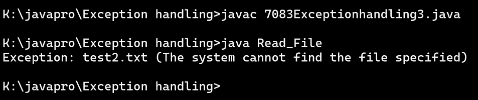

Write a Java program to create a method that reads a file and throws an exception if the file is not found
Code:-
import java.io.File;
import java.io.FileNotFoundException;
import java.util.Scanner;
class Read_File {
public static void main(String x[] ) {
try {
r_File("test2.txt");
} catch (FileNotFoundException e) {
System.out.println("Exception: " + e.getMessage());
}
}
public static void r_File(String fname) throws FileNotFoundException {
File file = new File(fname);
Scanner scanner = new Scanner(file);
while (scanner.hasNextLine()) {
String line = scanner.nextLine();
System.out.println(line);
}
scanner.close();
}
}
Output:-
